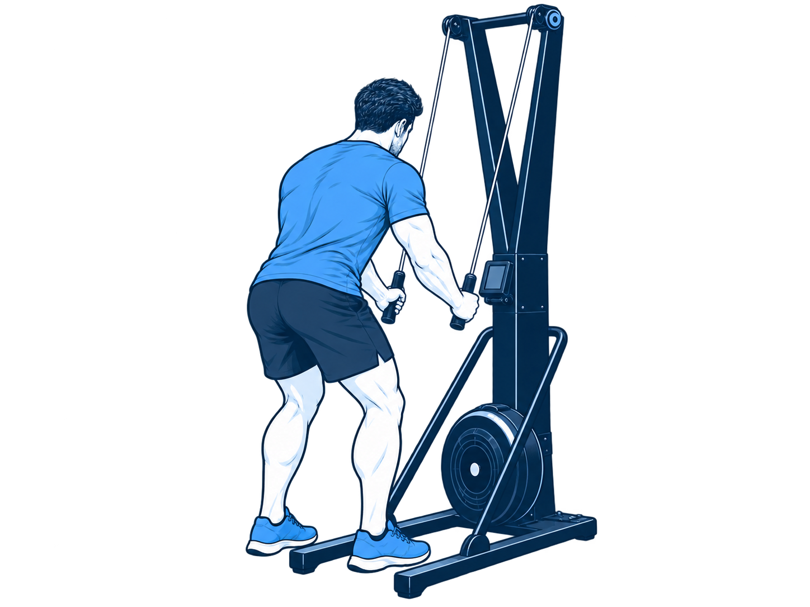

主圖：進步趨勢總覽
三個指標都共用同一條日期軸，但分成三排獨立顯示，這樣你不用被不同單位搞混， 還是能直接對照同一天的時間、距離與配速是否一起進步。 第一排看有沒有越跑越久，第二排看有沒有越跑越遠，第三排看平均配速有沒有改善。
訓練時間趨勢
距離趨勢
平均配速趨勢
集中查看訓練紀錄、21 週訓練計畫與男子公開組比賽規則。
這個頁面先用 outdoor_run 紀錄表 裡的室外跑步資料做第一版視覺化。
這次改成更偏「進步趨勢」的看法，先把「訓練時間、距離、平均配速」三條變化線排在同一個時間軸上，
讓你先看最近是不是變得更能跑、更能撐，或只是總量上升但速度還沒跟上。
三個指標都共用同一條日期軸，但分成三排獨立顯示，這樣你不用被不同單位搞混， 還是能直接對照同一天的時間、距離與配速是否一起進步。 第一排看有沒有越跑越久，第二排看有沒有越跑越遠，第三排看平均配速有沒有改善。
如果你想知道最近是不是穩定累積，而不是偶爾跑一次，這張圖最有用。 它把總訓練時間和總距離一路往上累加，幫你看整體訓練量是不是有持續堆起來。
這張圖只放大看距離，是因為距離通常最能代表耐力底子有沒有慢慢變厚。 如果你之後要做 Hyrox 訓練安排，這張圖會比單看配速更容易判斷底量是否夠。
這張圖專門看你每次室外跑步時，達到 2.4 公里的時間點有沒有越來越快。 因為 2.4 公里是固定目標，所以用完成時間看趨勢最直覺，越低就代表越快達標。
這一塊不是看跑得多快，而是幫你回顧「哪幾天有真的出去跑」。中間顯示今天所在月份，左右保留前後月， 讓你可以往前回顧，也可以順手看看下個月有哪些空白天數還能安排。
這張圖統計有心率區間資料的室外跑步紀錄，呈現每個 Zone 累積時間占比。 如果長跑目標是控制在 Zone 2 或 Zone 3，可以先看這兩區加起來是否逐漸提高。
這張保留下來當第二層判讀。當你先確認趨勢後，再回頭看單次訓練， 就能知道某一次是因為跑得久才跑得遠，還是真的效率變高。
這裡保留每筆原始紀錄的重要欄位，方便你對照圖表，確認資料是否符合你的訓練記憶。
| 日期 | 運動類型 | 時間 | 距離 | 平均配速 | 平均心率 | 耗力等級 |
|---|
資料來源：03_Records/outdoor_run.csv。目前圖表只納入「室外跑步」資料，未納入步行。
計畫期間為 2026/10/19～2027/03/13，每週三次、每次原則 40～70 分鐘。 健身房全期共十堂，前期每 2～3 週一次，最後 5 週每週一次。 安全完賽是主要目標，1 小時 45 分是第 19 週模擬後再評估的挑戰目標。
週檢視可閱讀每次課程細節；月檢視可快速確認哪幾天安排訓練。
計畫來源：下載訓練計畫 Excel。 日後可先調整 Excel，再更新網頁資料，保留依真實訓練狀況修訂的彈性。
依照比賽順序選擇站點，查看距離、重量、動作規則與訓練提醒。 內容由獨立 Markdown 文件維護，2026／2027 完整規則與台北站技術說明發布後仍需再次核對。

正在載入站點資料。
規則資料來源：data/hyrox_competition_rules.md